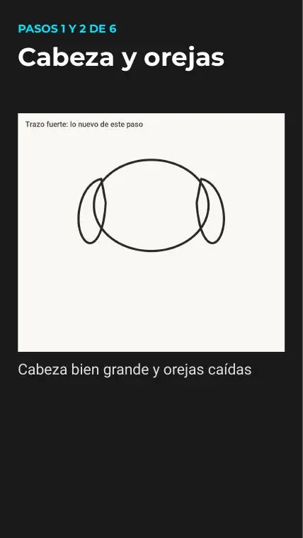
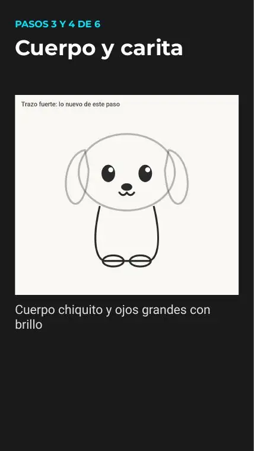
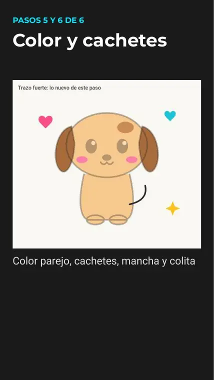
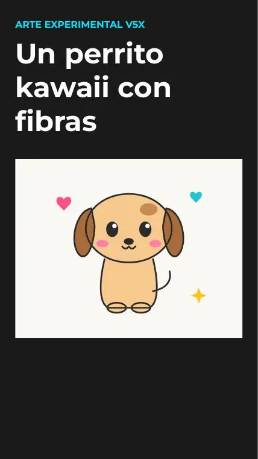
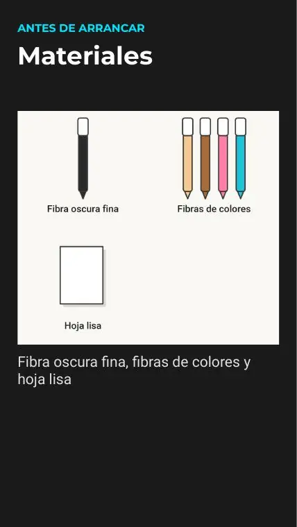
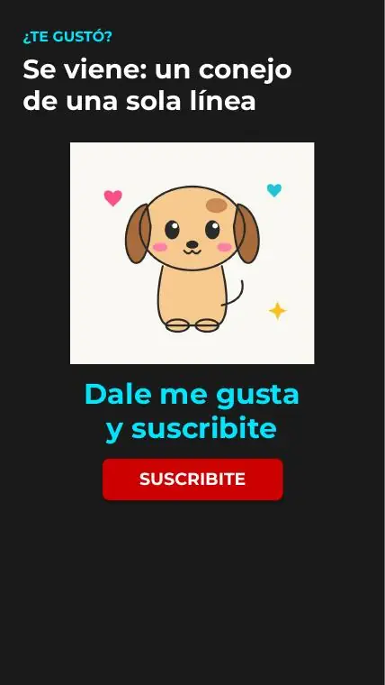

Tutoriales › Cómo dibujar un perrito kawaii con fibras

Tutorial 06 · Short publicado
Cómo dibujar un perrito kawaii con fibras
Dibujo paso a paso con 3 bloques de pasos explicados abajo. Mirá el video, descargá las diapositivas en PDF (6 páginas) y practicá a tu ritmo.
Video
Materiales
- Fibra oscura fina, fibras de colores y hoja lisa
Paso a paso

Pasos 1 y 2 de 6 · Cabeza y orejas
Cabeza bien grande y orejas caídas

Pasos 3 y 4 de 6 · Cuerpo y carita
Cuerpo chiquito y ojos grandes con brillo

Pasos 5 y 6 de 6 · Color y cachetes
Color parejo, cachetes, mancha y colita
Consejos
- Bocetá suave primero: las líneas de guía se borran al final.
- Si algo no sale, pausá el video o volvé a la diapositiva del PDF.
- Practicá el dibujo dos o tres veces: la segunda siempre sale mejor.
Todas las diapositivas del tutorial







Las imágenes de los pasos son páginas del PDF del tutorial (material propio del canal). Licencia: uso personal libre; no reventa.